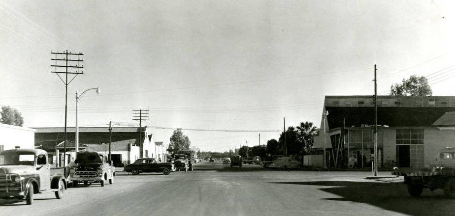
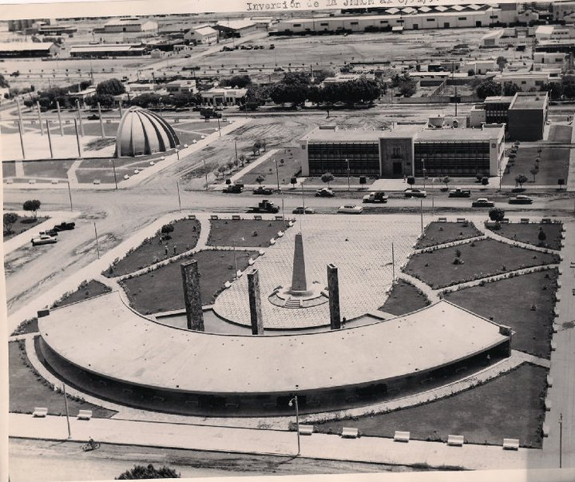

Historia
Si eres de la Generacion de los 70's y principios de los 80's, quizas aun recuerdes con nostalgia la imagen original de esta edificacion, era hermosa en verdad, muchos ahi fueron bautizados y confirmados, ya hace mucho tiempo que se optó por demolerla para dar paso a la Nueva Catedral.
Los orígenes de esta ciudad datan del año 1906 cuando la vía ferroviaria de la compañía Ferrocarril Sud Pacífico llegó a esta zona del Valle del Yaqui; esta vía,
posibilitó su incorporación con el valle del Mayo al mercado interno y externo, atrayendo una ola de inversionistas y colonos que hicieron surgir poblaciones.
En 1907 se estableció una estación bandera para que la locomotora que cruzaba el estado se abasteciera de agua, a esta estación se le llamó Cajeme. Cajeme es el nombre de
un líder yaqui (cuya población habita en esta zona) que luchó contra estos como parte del ejército porfiriano; y que después encabezaría la rebelión yaqui contra el mismo Porfirio Díaz.

"La estación Cajeme estaba a cargo del estadounidense Bert Cameron, superintendente, y de Emilio Estrella, jefe de estación. Ellos y sus familias fueron los primeros pobladores.
Poco después llegaron los vaqueros a cuidar los corrales del ganado que desde aquí era enviado a otras regiones. Enseguida vinieron vecinos de Esperanza, cerca de los campos
cultivados en el Valle". Los yaquis ofrecieron resistencia ante la llegada de los primeros colonos a sus tierras. En 1927, el jefe de la estación del Ferrocarril Sud-Pacífico de México
era Lauro Servín de la Mora.
El primer barrio fue llamado Plano Oriente. En 1923 se instala 'Cajeme Motors' propiedad del estadounidense James Huffaker, fue la primera agencia de automóviles; hecho que
contribuyó notablemente en el desarrollo de Cajeme. Al concluir su periodo como presidente del país (1920-1924), el general Álvaro Obregón regresa a Sonora y lleva a cabo proyectos
empresariales en Navojoa y Cajeme, creando en 1925, la sociedad 'Obregón y Cía.', que aportó más trabajo y desarrollo económico en la región.
El 29 de noviembre de 1927 fue declarada cabecera de municipio (hasta entonces había sido parte del de Cócorit) por el gobernador Fausto Topete, y en 1928 año en que se instala
el primer ayuntamiento, se decreta el 28 de julio del mismo año el cambio de nombre por el de Ciudad Obregón en reconocimiento a Álvaro Obregón, mientras que el nombre del municipio
se conservó. Ese mismo año se instaló la primera imprenta y fue donde se imprimió el primer semanario informativo llamado La Gaceta del Pacífico, propiedad del inmigrante lituano
Leo Rosenfeld y su esposa Virginia Gámez.
Las primeras colonias fueron Plano Oriente, Ladrillera, Cumuripa, Hidalgo, Constitución, El Castillo, Quinta Díaz, Bella Vista y Colonia del Valle.

El arroz fue el cultivo más importante del Valle del Yaqui a principios del siglo XX; entre otros cultivos estaban también el trigo, frijol, garbanzo, diversas hortalizas y alfalfa.
Con el transcurrir del siglo, el trigo se convirtió en el cultivo más importante. Debido a la vocación agrícola de Cajeme, la primera industria de gran importancia fueron los molinos arroceros.
En los años 50 el científico agrónomo Norman E. Borlaug (llamado el Padre de la Revolución Verde), colaboró con la creación del Centro de Investigaciones Agrícolas del Noroeste (CIANO)
y en 1970 recibió el Premio Nobel de la Paz por su trabajo en la investigación agrícola en el valle desarrollando mejores variedades de trigo y maíz.
A finales del siglo XX desapareció el ferrocarril como medio de transporte para pasajeros y la estación quedó abandonada.
Para el desarrollo de las actividades productivas el comercio local ofrece todo lo necesario, desde refaccionarias, tiendas de implementos agrícolas, maquinaria para la agroindustria,
equipos de seguridad y toda clase de insumos para la producción. Se cuenta con dos mercados de abastos.
Para la realización de las actividades económicas y servicio al público en general, Ciudad Obregón cuenta con oficinas de las principales instituciones financieras del país.
Descubre el corazón del Valle del Yaqui.
Cd, Obregón, Sonora, México.
+52 644 252 9618
obson@gmail.com